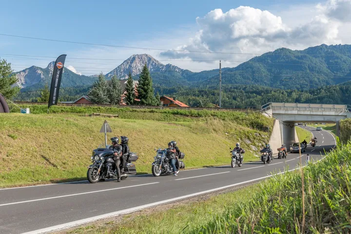

da sab 5 set a sab 12 set · dalle 09:30
Tour guidati in moto dal Faaker See
Titolo originale: Geführte Motorradtour – European Bike Week 2026
Escursioni quotidiane in moto attraverso la Carinzia e i Paesi vicini, con guide di Harry’s Bike Tours.
 Indicazioni
Indicazioni
- Costi e prenotazioni
- Gratis con Erlebnis CARD · altrimenti €59 · Prenotazione entro le 15:00 del giorno precedente
- Programma
- Programma confermato. Periodo, orario, prezzo e modalità di prenotazione pubblicati da Visit Villach.
- In caso di maltempo
- Percorso soggetto alle condizioni meteo e stradali; confermare con la guida.
- Note
- Carburante, pedaggi e pasti non sono compresi.
L’EVENTO
Descrizione completa
Le guide di Harry’s Bike Tours accompagnano ogni giorno i motociclisti su itinerari panoramici attraverso la Carinzia e le regioni confinanti. Le partenze dal Faaker See anticipano e accompagnano la settimana del grande raduno motociclistico.
I tour si svolgono dal 5 al 12 settembre con partenza alle 09:30. Per gli ospiti con Erlebnis CARD la guida è gratuita; senza card il prezzo indicato è 59 euro. Carburante, pedaggi e pasti restano a carico del partecipante.
La prenotazione è obbligatoria entro le 15:00 del giorno precedente per telefono o e-mail. Il percorso giornaliero può variare in funzione del meteo e delle condizioni stradali.
IL PROGRAMMA
Programma e orari
Appuntamenti raccolti dalle fonti elencate. Dove manca un orario, non è ancora disponibile in questa scheda.
Dal 5 al 12 settembre
- Ogni giorno · partenza alle 09:30
- Itinerario guidato in Carinzia o nelle regioni vicine
- Rientro secondo il percorso del giorno
INFORMAZIONI UTILI
Prima di partire
- Carburante, pedaggi e pasti non sono compresi.
- Testi tradotti in italiano dalla fonte tedesca.
- Contatti: +43 664 1501206 · harry@harrys-biketours.at
ORGANIZZAZIONE